由于odoo官方在12版本以后弃用了web_diagram模块，视图类型也就缺少了diagram类型；原生的审批模块又不够可视化， 所以就产生了开发一套可以图形化配置审批流，实现企业数字化审批，并且对接企业微信，将审批消息通知到个人， 提醒及时审批以及审批过程中的信息通知，模块实现会签，或签，转签，转阅等基本功能。 下面简单介绍下模块的使用
1.初始化审批流，定义需要审批的模型，以及审批中的一些额外配置
字段解释：
1. 审批完成前不显示其他功能按钮：审批完成前不允许用户看到表单的其他按钮，一切后续操作需要等待单据审批完成才能执行
2. A处，可编辑表单：审批中或审批完成后可编辑的字段，如果不配置，表单不允许编辑
3. B处，设置条件：可设置字段条件，满足条件的表单进入审批流程，如果不配置，默认所有表单都会进入审批流程
4. C处，抄送相关配置：可配置表单审批完成后将单据抄送给其他用户，通知模板可配置，优先使用此处模板，如果不配置，将采用固定语言
2. 绘制流程
默认创建【开始、结束】节点
点击【添加节点】
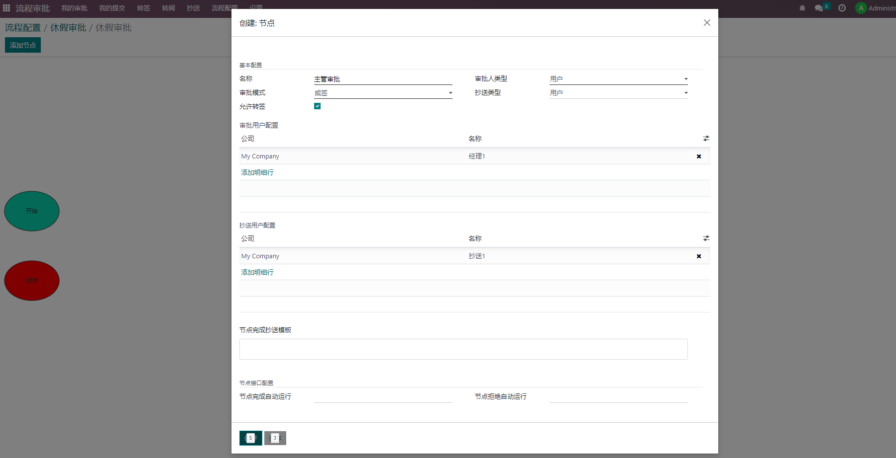1. 审批模式：会签，节点所有审批人审批完成才跳转到下一节点；或签，主要有一个人审批完成就可以跳转到下一节点
2. 允许转签：允许当前审批人转签给其他用户审批
添加条件，生成不同的审批路径
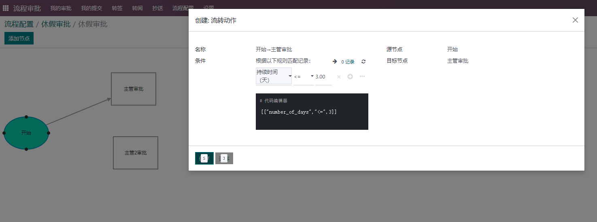 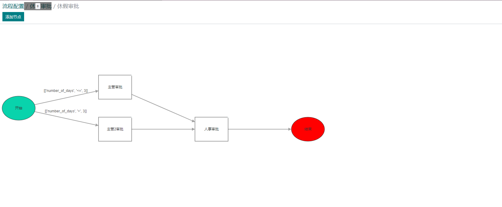3.首次发布
配置完成之后 ，点击【首次发布】，发布成功之后，再次点击【绘制流程】进入到图形界面时
是不允许添加节点，删除节点，必须点击【更新流程】后才能修改审批流程
并且修改后的审批流不影响系统已经提交审批的单据
4.下面我们提交一个休假进行审批
新建休假单据，只显示【提交审批】按钮
提交审批，显示审批流程节点详细信息在表单的下面，可取消审批，暂停审批，恢复审批
关联企业微信消息通知
审批，这里模拟都是审批通过，用户【经理1】登录系统，进入审批模块，点击待审批菜单
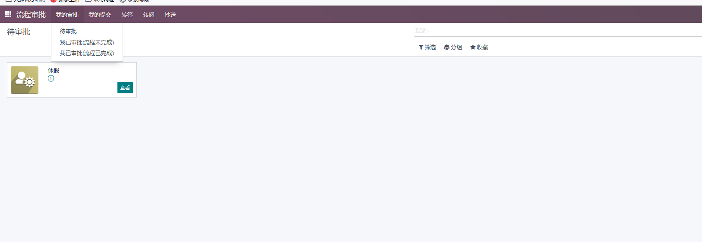 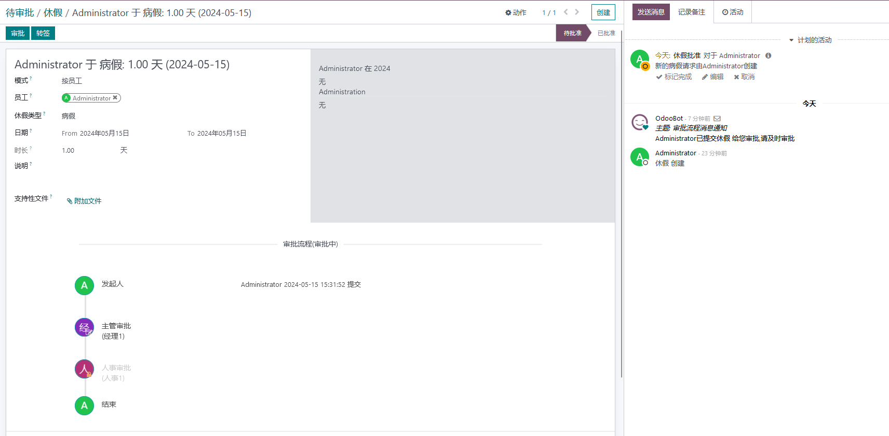可转签给其他人，点击审批，同意，抄送消息通知
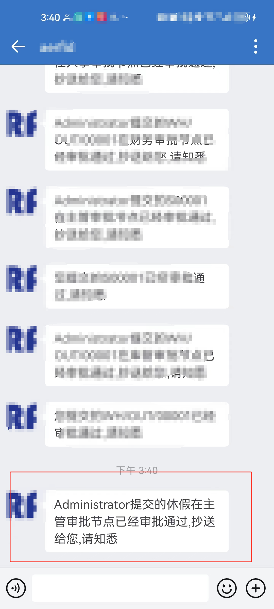审批完成后，显示表单其他按钮
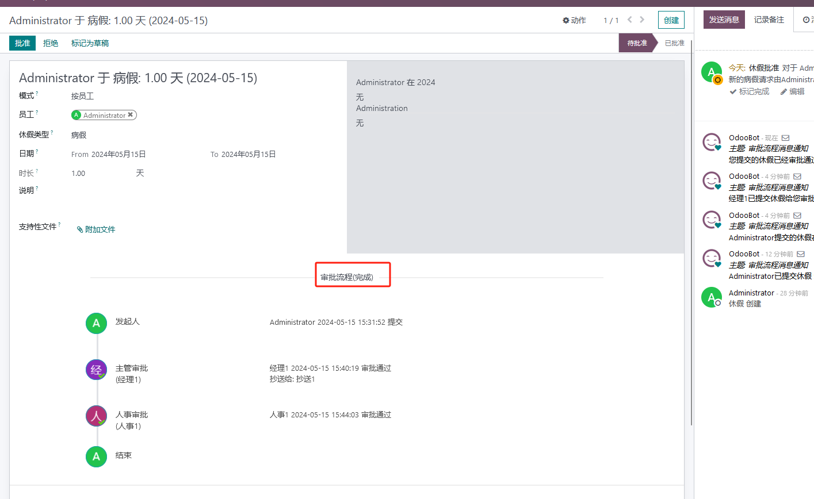5. 其他一些看板：我的提交，转阅，转签，抄送
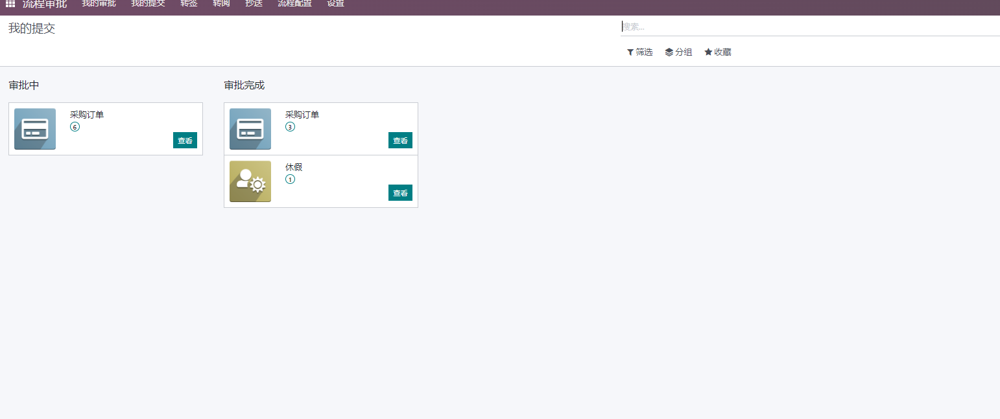6.设置模块的消息通知
默认只使用odoo内部进行消息通知，如果需要配置企微消息，进行如下配置
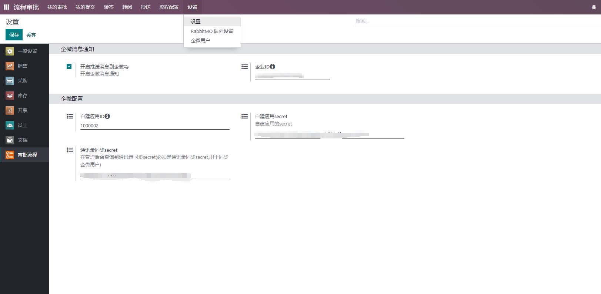7. 拉取企微用户，并和odoo用户表做关联
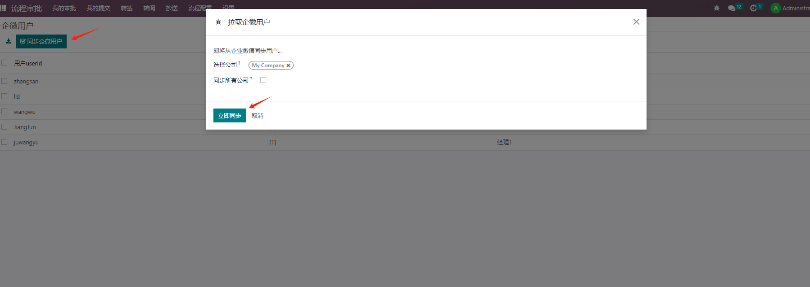 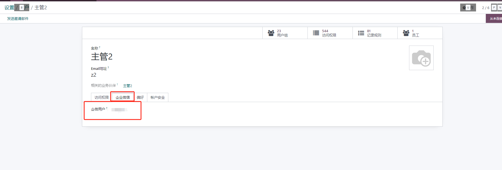审批驳回不在这演示
模块可根据具体需求进行拓展开发